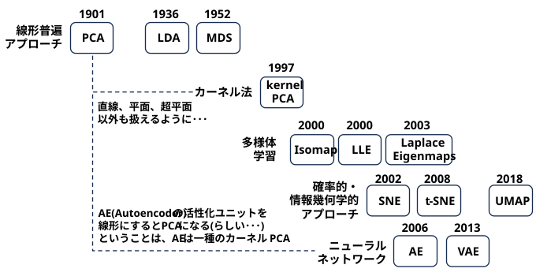
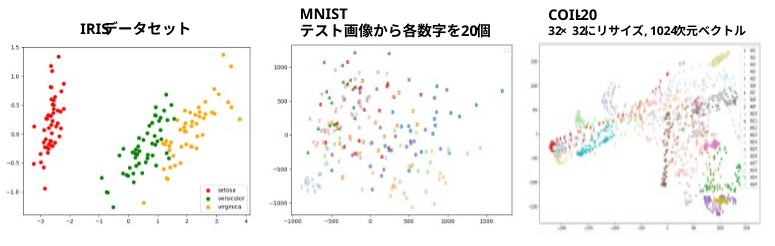
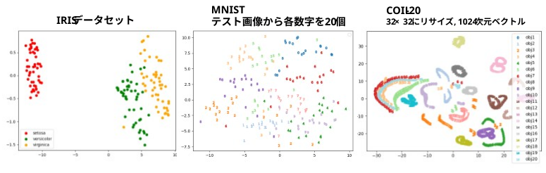

高次元のデータが持つ重要な情報（本質的な特徴や関係性）をできるだけ維持しながら、より少ない変数（低次元のデータ）に変換する処理のこと
人間には認識できない高次元データでも、2次元や3次元に削減することで、散布図などのグラフにプロットして視覚的にクラスタ（集まり）やパターンを確認できるようになる。
特徴量が増えると、計算コストの肥大化や予測精度の低下を招く「次元の呪い」と呼ばれる問題が発生する。
特徴量の数が減るため、機械学習モデルの学習スピードが大幅に向上し、必要なメモリやストレージの量も節約できる。
予測に関係のないノイズや冗長な情報を取り除くことで、モデルが未知のデータに対して正しく予測できる能力（汎化性能）が高まる。

手法により、データの見え方が異なる。どれが正解と言えないが･･･
(お試し用データ)
・(data/task_dimensiona/reduction/src/sample_mnist_20_data.py)
でテストデータから各文字20個を抽出した。
・(data/task_dimensiona/reduction/src/create_coil20_images.py)
で32×32に縮小したデータを作成した。
主成分分析(PCA)
・『On lines and planes of closest fit to systems of points in space』(1901)
https://en.wikipedia.org/wiki/Principal_component_analysis
統計学の祖の一人であるピアソンが、空間上の点群に最もフィットする直線や平面を求める幾何学的なアプローチとして提案しました。
データの分散が最大となる方向（主成分）を見つけ、直交基底に射影する手法。
※ データが曲線に沿って分布するような場合は、うまくいかない → カーネルPCA
お試しコード
(data/task_dimensionality_reduction/src/iris_dim_reduction_by_pca.py)
(data/task_dimensionality_reduction/src/mnist_dim_reduction_by_pca.py)
(data/task_dimensionality_reduction/src/coil20_dim_reduction_by_pca.py)
import numpy as np
from sklearn.decomposition import PCA
Data_high_dim = np.load(...) # 高次元データをロード
pca = PCA(n_components = 2)
pca.fit(Data_high_dim)
Data_2d = pca.transform(Data_high_dim)

線形判別分析 (LDA)
・『The use of multiple measurements in taxonomic problems』 (1936)
・『Fisher’s Pioneering work on Discriminant Analysis and its Impact on AI』 (2023)
・チェルノフの顔表現 (Chernoff face representations)
アヤメのデータ（Fisher's Iris）を用いて、分類（分類器）と次元削減を同時に行う手法としてフィッシャーが提唱しました。
クラスラベルを利用し、クラス間分散を最大化・クラス内分散を最小化する射影軸を見つける手法。
教師ありの手法
お試しコード
(data/task_dimensionality_reduction/src/iris_dim_reduction_by_lda.py)
import numpy as np
from sklearn.discriminant_analysis import LinearDiscriminantAnalysis
Data_high_dim = np.load(...) # 高次元データをロード
label = np.load(...) # ラベルも必要
lda = LinearDiscriminantAnalysis(n_components=2)
Data_2d = lda.fit_transform(Data_high_dim, label)
多次元尺度構成法 (MDS)
・『Multidimensional scaling: I. Theory and method』 (1952)
高次元空間におけるサンプル間の距離 (類似度) を、低次元空間でもできるだけ維持するように配置する手法
元々は心理物理学（人間の感覚の計量）の分野で、主観的な類似度から空間的な配置を構成するために提案されました。
お試しコード
(data/task_dimensionality_reduction/src/iris_dim_reduction_by_mds.py)
import numpy as np
from sklearn import manifold
Data_high_dim = np.load(...) # 高次元データをロード
N = Data_high_dim.shape[0]
P = np.empty((N, N), np.float32)
for y in range(N):
for x in range(N):
P[y][x] = np.linalg.norm(Data_high_dim[y] - Data_high_dim[x])
P2 = P ** 2 # 各要素を2乗
mds = manifold.MDS(n_components = 2, dissimilarity = 'precomputed')
Data_2d = mds.fit_transform(P2)
線形手法では捉えられない複雑な非線形構造を、カーネル関数を用いて高次元特徴空間（ヒルベルト空間）に写像してから線形処理する系譜
カーネル主成分分析 (Kernel PCA)
・『Kernel principal component analysis』 (1997)
サポートベクターマシンなどで成果を上げていた「カーネルトリック」を、初めてPCAに融合させた画期的な論文です。
お試しコード
(data/task_dimensionality_reduction/src/iris_dim_reduction_by_kernel_pca.py)
import numpy as np
from sklearn.decomposition import KernelPCA
Data_high_dim = np.load(...) # 高次元データをロード
kpca = KernelPCA(n_components=2, kernel='rbf', gamma=0.5)
Data_2d = kpca.fit_transform(Data_high_dim)
データが高次元空間内に潜む「低次元の滑らかな曲面（多様体）」上に分布していると仮定し、その局所的なトポロジーや近傍関係を維持したまま平坦に開く系譜
Isomap
・『A global geometric framework for nonlinear dimensionality reduction』 (2000)
測地線距離（近傍グラフ上の最短経路）を計算し、それをMDSに適用して大域的な幾何構造を維持する手法
LLE (Locally Linear Embedding)
・『Nonlinear dimensionality reduction by locally linear embedding』 (2000)
各点の局所的な線形結合関係（重み）を保ったまま低次元に写像する手法
Laplacian Eigenmaps
・『Laplacian eigenmaps and spectral techniques for embedding and clustering』 (2003)
グラフのラプラシアンを用いて、近傍にある点同士を低次元空間でも近くに配置する手法
高次元におけるサンプルの近傍確率分布と、低次元における確率分布の間の情報損失（Kullback-Leibler情報量など）を最小化するアプローチです。視覚化に極めて優れています。
SNE (Stochastic Neighbor Embedding)
・『Stochastic neighbor embedding』 (2002)
AIの世界的権威ジェフリー・ヒントンらが提案した、確率分布の差異（KLダイバージェンス）を最小化するアプローチの原点です。
t-SNE
・『Visualizing data using t-SNE』 (2008)
SNEで発生していた「クラウド問題（データが中心に密集してしまう問題）」を、低次元側にt分布を採用することで解決した、可視化における超重要論文
お試しコード
(data/task_dimensionality_reduction/src/iris_dim_reduction_by_pca.py)
(data/task_dimensionality_reduction/src/mnist_dim_reduction_by_pca.py)
(data/task_dimensionality_reduction/src/coil20_dim_reduction_by_pca.py)

UMAP
・『UMAP: Uniform Manifold Approximation and Projection for Dimension Reduction』 (2018)
リーマン幾何学と代数的トポロジーの理論に基づき、t-SNEよりも大域的な構造（クラスター間の位置関係）を維持しつつ高速に計算する現代の主流手法
Autoencoder
・『Reducing the dimensionality of data with neural networks』 (2006)
ディープニューラルネットワークの「多層のボトルネック」を事前学習（Pre-training）によって最適化し、当時の非線形PCAを圧倒する精度を出して第三次AIブーム（ディープラーニング）の引き金となった論文です。
入力と出力が同じになるように中間層（ボトルネック）を訓練する。
変分オートエンコーダ(VAE)
・『Auto-encoding variational Bayes』 (2013)
次元削減を「確率的な生成モデル」の文脈（変分ベイズ）で再定義し、現在の画像生成AIなどの基礎を築きました。
潜在空間に確率分布（通常はガウス分布）を仮定し、生成モデルとしての性質を持たせた次元削減。